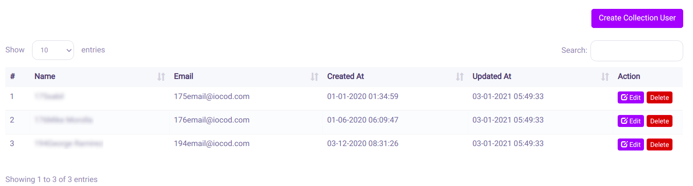
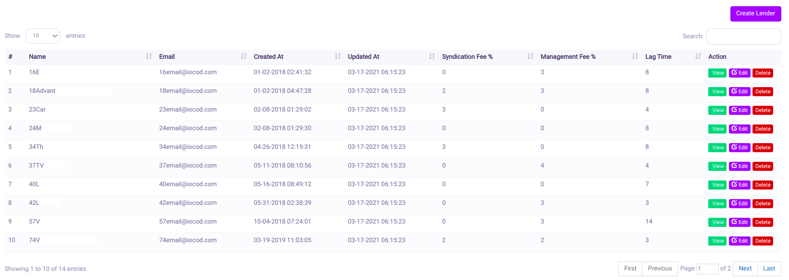
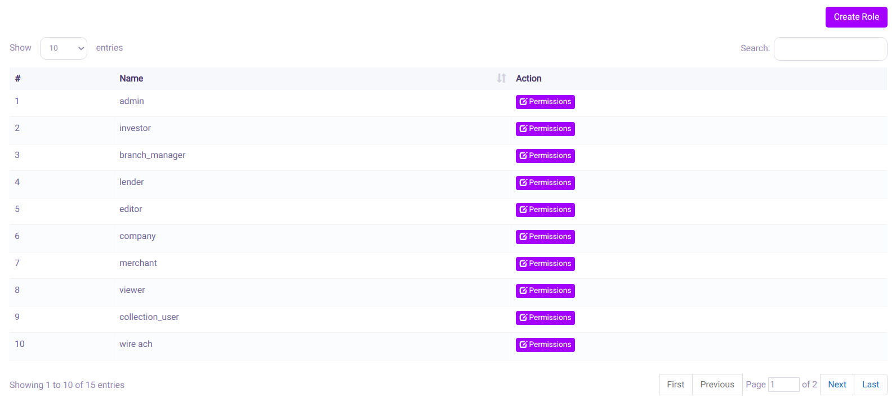
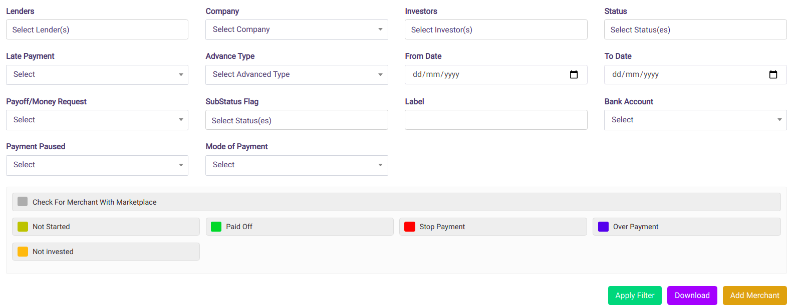
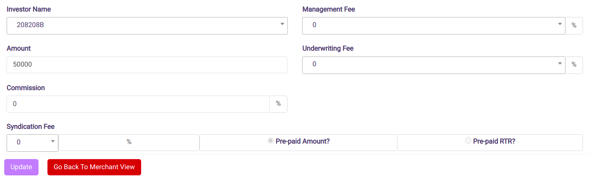
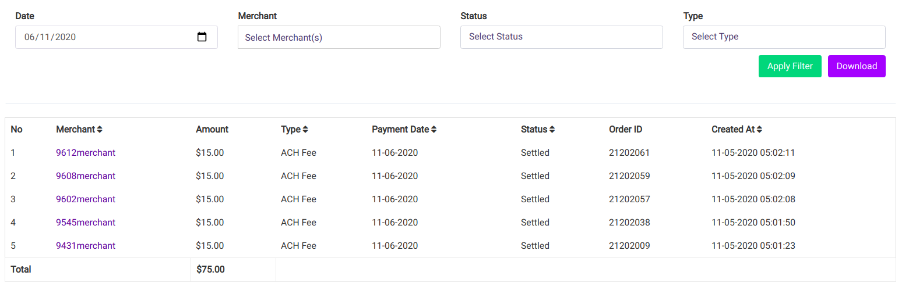
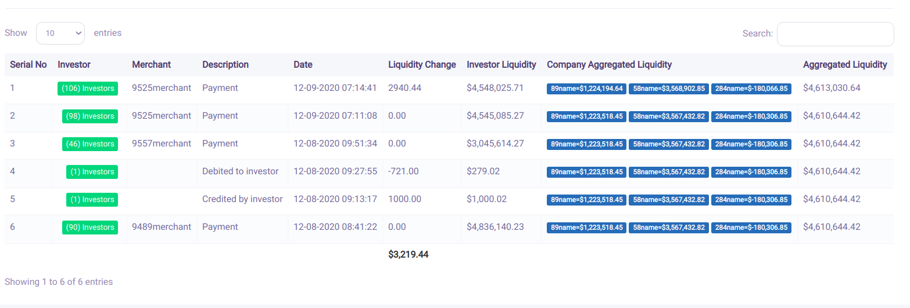

Features of Admin User Type
Dashboard
- The screenshot of the admin dashboard is as below:
- A company filter has been incorporated in the dashboard. According to the selection in the filter, the data in the dashboard is queried and displayed. The company filter is a dynamic feature and can be edited without editing the software.
- Label Filter has been provided wherein the dashboard values will be queried and displayed according to the selection.
Accounts Menu
All Accounts
We are allowed to view all the Accounts present, to date. Visualization has been presented as below:We can perform the following tasks from here:
- We can apply a few filters as shown in the shot above. You can filter your results according to the filters as shown above.
- You can directly create a new Account directly from this screen. A button has been provided for this purpose.
- You can also perform different functions for individual Accounts, such as:
- To upload the required document, we just need drop the file onto the box provided.
- Options to View, Update and Delete have been provided.
- Various kinds of documents can be uploaded such as Bank Statements, Credit Card Statements, Driving License etc have been provided.
- Editing of the basic details is provided here.
- Provision to view the present bank setting is provided here.
- We can Edit or Delete the present bank details. Edit Screen has been shown as below:
- We can also navigate to Create a Bank Accounts page wherein we need to fill out the different options and then
Create Accounts
This option is for creating new investors. You need to enter the following details to create a new user. A few of them are optional, in case of which default values will be taken. The details to be entered are as follows:- Name of the Investor
- Investor Type
- Management Fee to be given as a percentage
- Account Type
- Syndication Fee to be selected from the dropdown list and is also given as a percentage
- Email Address, Password, Confirm Password
- Send Password by Email
- Email for Notifications
- Payout Frequency
- File Type
- Phone
- Cell Phone
- Company
- An option for Enabling/Disabling an Investor has been given.
- On completion of entering the data, we can create the Investor Profile.
- For ease of use, an option for Viewing All Investors has been added to this page.
- A new feature for Auto Invest Collected Amount has been added.This feature enables the Investor to fund Merchants with Insurance.
Generate PDF For Investors
During the process of business, we might need to save the Investor details. An option for this has been added to the portal so as to get the PDF for the same.- We can filter the records using the following criteria:
- From Date and To Date
- Investors
- Group By
- Recurrence
- An option to send the PDF as email has been provided here also.
Generated PDF/CSV Manager
Collection Users Menu
All Collection Users
We are allowed to view all the Collection Users present, to date. Visualization has been presented as below: - This displays all the Collection Users.
- You can directly create a new Collection User directly from this screen. A button has been provided for this purpose.
Create Collection Users
This option is for creating new Collection Users. You need to enter the following details to create a new user. A few of them are optional, in case of which default values will be taken. The details to be entered are as follows:
- Name of the Collection Users
- Email Id
- Password
Investor Companies Menu
All Companies
We are allowed to view all the Collection Users present, to date. Visualization has been presented as below:- This option is to view all the existing Companies present at that particular time and their details
- The details, such as Name, Email, Created On, Updated At, are displayed in this menu after querying the database, as shown in the screenshot above:
- The option to Edit and Delete has also been given here. If you want to edit, you are taken to a page similar to the Create Company page, wherein you can update the details
Create Companies
This option is to view all create new Companies by entering their details, as shown in the figure below:
- The details, such as Name, Email and Password are to be entered in order to create a new Company
- The Brokerage Fee, in percentage, also needs to be added which will be required for further calculations
- An added feature is of Attaching to the Admin, that is, their data will be with the Admin
- You can also traverse to the All Companies list from this page itself to view all the companies present
Admin Menu
All Admin
- This option is to view all the existing Admin present at that particular time and their details
- The details, such as Name, Email, Created On, Updated At, are displayed in this menu after querying the database, as shown in the screenshot below:
- The option to Edit and Delete has also been given here. If you want to edit, you are taken to a page similar to the Create Admin page, wherein you can update the details

Create Admin
This option is to view all create new Admin by entering their details, as shown in the figure below:
Editor Menu
All Editor
- This option is to view all the existing Editor present at that particular time and their details
- The details, such as Name, Email, Created On, Updated At, are displayed in this menu after querying the database, as shown in the screenshot below:
- The option to Edit and Delete has also been given here. If you want to edit, you are taken to a page similar to the Create Admin page, wherein you can update the details
Create Editor
This option is to view all create new Editor by entering their details, as shown in the figure below:
Lender Menu
All Lender
- This option is to view all the existing Lender present at that particular time and their details
- The details, such as Name, Email, Created On, Updated At, Syndication Fee, Management Fee and Lag Time are displayed in this menu after querying the database, as shown in the screenshot below: 
- The option to Edit and Delete has also been given here. If you want to edit, you are taken to a page similar to the Create Lender page, wherein you can update the details
Create Lender
This option is to view all create new Editor by entering their details, as shown in the figure below:
Lender Settings
This option is to view all create new Lender by entering their details, as shown in the figure below:
- This option is for enabling or disabling Lenders depending on the need of the hour, as shown below:
Viewer Menu
All Viewer
- This option is to view all the existing Lender present at that particular time and their details
- The details, such as Name, Email, Created On and Updated At are displayed in this menu after querying the database, as shown in the screenshot below:
- The option to Edit and Delete has also been given here. If you want to edit, you are taken to a page similar to the Create Lender page, wherein you can update the details.
Create Viewer
This option is to view all create new Viewer by entering their details, as shown in the figure below:
Roles And Permissions Menu
Users And Roles
- This option is to view all the roles that have been assigned to each user.
- A filter has been provided so as to query and tabulate the required result.
- Option to edit an existing user has been provided here by clicking on the view button.
- Option to create a new user has been provided here.
- You need to fill in Name, Email id, Password and these are compulsory fields. You also need to assign roles by checking the required boxes. Clicking on the Create button will create the said user.
- From here itself option to View Users and View Merchants has been provided.
Roles And Permissions
-

- Before we had to manually specify the roles and permissions of the different users. It has been changed so that all the permissions, at present, are displayed, depending on the role. We can edit these and add or remove the permissions.
- Another option to Copy Role Permissions have been created. This allows to copy the permissions allotted to a particular role.
Modules
User Firewall
Merchants Menu
All Merchants
-

- ACH Transfers included in the Advance Type as shown below:
- Filter for Bank Account also added with filter values of Yes or No. Accordingly, the queried result will be tabulated.

As shown in the figure above, there are a few buttons provided against each merchant. View button allows us to view a detailed view or the Portfolio of Merchant data as shown in the screenshot provided.
Transactions are provided according to the payment date. Details of each transaction on a particular date can be expanded and viewed as given below.
- For each merchant, an array of buttons have been provided for different functions provided:
- All documents that needs to be uploaded can be done by just dropping the files here.
- Notes can be added for the merchant
- Stripe integration- Credit Card mode payment - new method of payment added to the takes to a different page where payments can be made using the Credit Card.
- Displayed amount to be paid would be including the processing fee.
- A new feature for ACH transfers have been provided. They are a way to move money between accounts at different banks electronically. They enable you to send or receive money conveniently and securely.
- ACH Terms button, when clicked take to the Payment Terms page giving the Merchants details as shown in the figure:
- Pause Button has been added to pause the payment
- Paid transactions are marked green.
- Investor Names, as seen in the tabulation, are links that takes us to a separate window wherein we can edit the Investor Details.
- Edit button provided against each Investor takes to a page as given below: 
- The above screenshots show the entries required for creating a new Merchant.
- The fields marked with star are compulsory
- All notifications will be emailed to the email id specified at the time of Merchant creation
- New fields Experian Intelliscore and Experian Financial Score has been added. An Intelliscore is a term used in business, for a numerical score granted by Experian to Business as a credit score for the promptness of their payments to creditors.
- In case, a deal is not complete and it has not received payments in 4 months, then we have the option to change the status of the merchant to default.
- Here, on clicking the “Change Merchant Status”, a separate window opens and we can select the merchant whose status we would like to change.
- In case, a deal is 99% complete, then we can change the status to Advance Completed.
- Here, on clicking the “Change to Advanced Completed Status”, a separate window opens and we can select the merchant whose status we would like to change.

Create Merchants
Graphs
Change to Default
Change to Advanced Status
Generate Statements
Generated Statements
Marketing Offers
The Marketing Offers helps us to set up offers to the market.
A Create Offer button has been provided to add in new Marketing offers.
Transactions Menu
The Transactions Menu has a few sub-menus as shown in the screenshot below:
All Transactions
- This option is to view all the transactions made and their details.
- The details, such as Category, Amount, Date and Account Number are displayed in this menu after querying the database, as shown in the screenshot below:
- We can also apply Filters like Date, Investors, Account Number and Transaction Categories.
- The option to Delete or Delete Batch has also been given here.
- You can also create a new transaction bill.

Create Bills
This option is to view all create Transaction Bill by entering their details, as shown in the figure below:
- The details, such as Company, Merchants, Investors, Account Number, Category, Amount and Date are to be entered in order to create a new Bill.
- The option to view the overall list of all Transactions have been added here.
- One can Select all Investors or Deselect the Investors by clicking on the respective buttons.
Import Bills
- This option is to import Transaction Bills.
- An option to download the format has been provided. You need to upload in the given format.
- A CSV needs to be chosen for uploading.
Reconciliation Request
- Reconciliation Request menu item added to get a
- Merchant, Reconciliation, Funded Date, Days, IP address and Date are tabulated.
Reconciliation Mail Log
- Reconciliation Mail Log menu item added to get a record of the Reconciliation mails sent to merchants at an interval of 30 days. Mail description also added.
- Merchant, Title Status, Failed Message, Email and Date are tabulated.
Velocity Menu
The Velocity Distributions Menu has a sub-menu as shown in the screenshot below:
The different sub-menu item available is:
All Distributions
- You can write Equity investors distributions can be viewed and edited here.
- We can also apply Date Filters and query the database.
- Option to download also provided here, in case you would like to have a saved copy for the query.
- An option to “Create Velocity Distribution” is also provided, wherein you can enter the details of Amount, Investment Date, Maturity Date, Investor, Transaction Category and Transaction Type.
Merchants Batches Menu
The Merchants Batches has a few sub-menus as shown in the screenshot below:
All Batches
This option is to view all Batches by entering their details, as shown in the figure below:
Create Batches
This option is to create Batches by entering their details, as shown in the figure below:
Payments Menu
The Payments has a few sub-menus as shown in the screenshot below:
Open Items
Generate Payment For Lenders
This option is to create Batches by entering their details, as shown in the figure below:
- This option is to view all the transactions made and their details.
- TWe can also apply Filters like Lender, Payment Date and Company.
- On clicking the “View” button, the result of the query, as shown in the screenshot below:
- You can generate payments for all or for an individual Merchant. The selection of the Merchant can be done by checking the checkbox.
- The details such as “Merchant Name”, “Payment Date”, “Weekly Payment”, “Net Payment” and “Daily Payment” need to be provided.
- By clicking on the Merchant’s Name, you can get the details of that particular Merchant, along with all the payment details.
- By entering all the given details, you can generate a payment, which will be recorded in the database.
Send ACH
- This shows a list of Merchant ACH details that is to be sent to the bank the next day. On clicking, the details are sent to the bank.
- All fields have been made editable, so now we can enter the different fees. If there is a definite fee already specified, then that would be displayed, else it will be shown as null. We can add any fee amount.
- The status of this can be viewed in the ACH Status Check Menu.
ACH Status Check
- We can view the ACH status of Merchants.
- Various Status Type Filter have been provided, such as Processing, Settled, Returned.
- Sorting in different fields have been added for the ease of understanding.
- "Created At" Field for the date of creation of the record.
- Link has been provided with the Merchants name, which enables to view the details of the particular Merchant.
- At the end of the tabulation we can find the total Amount.
- You can also create a new transaction bill.
ACH Fees
- We can view the ACH Fees of Merchants. 
- Date, Merchant, Status and Type filters have been provided.
- Status filter options are Processing, Settled and Returned
- Type filter options are ACH Rejection, NSF, Bank Change, Blocked Account, ACH Fee and Default Fee
- The query results can be tabulated under the headings Merchant, Amount, Type, Payment Date, Status, Order ID and Created At
- All fields, except Amount and Order ID, can be sorted.
- Displays merchants whose fees have been set. All the fees will be added to the fees section only. It will not be added to the system data. We can also download the same tabulation.
- By clicking the Merchant's name, we can directly reach Merchant details page
Investor ACH
The Payments has a few sub-menus as shown in the screenshot below:
- An ACH payment is a type of electronic bank-to-bank funds-transfer payment system.
- Payments via ACH are made through the ACH network, rather than going through the card networks.
Status Check
This option is to view Investor ACH Status.
- This option is to check ACH Status.
- We can apply Filters like Date, Investors, Settlement Status, Transaction Method, Transaction Type and Request Status.
- The details, such as Date, Investor, Order Id, Transaction Type, Transaction Method, Amount, Request Status, Settlement Status, Auth Code, Status Response and Action are displayed in this table after querying the database, as shown in the screenshot below:
Syndication Payments
- This option is to view all the transactions made and their details.
- Investor From To Total Payments PTD Management Fee Net Amount Syndicate Payment(PTS) Liquidity Action
- This option is to view all the transactions made and their details.
- TWe can also apply Filters like Lender, Payment Date and Company.
- On clicking the “View” button, the result of the query, as shown in the screenshot below:
- By entering all the given details, you can generate a payment, which will be recorded in the database.
Marketplace Menu
- Here only the Merchants who have been selected for Marketplace can be viewed.
- Merchant's data is displayed here and Investors can invest money in it by clicking onto the “Fund” button.
- Admin can approve this deal and the Merchant will be funded by the Gross Amount.
Logs Menu
The Logs Menu has a few sub-menus as shown in the screenshot below:
Liquidity Log
-

- Description Field and Description Filter added in Liquidity Log
Merchants Liquidity Log
Merchants Status Log
Activity Log
Investor Transaction Log
- All the details of the transaction of an Investor is captured here.
Message Log
- Whenever a payment fails and a RCode is returned, a ,message is to be sent. The body of the message will contain that the payment has failed with the said RCode. An option to make the payment is available and a link is sent through which it can be done. .
- Merchant Name, Date, Mobile, Remarks, Status and Action are tabulated here.
- Date filters and Status filters have been provided. For Status filter. options provided are 'All', 'Pending' and 'Completed'.
- Provision has been provided to expand and view the details of the message to be sent.
Bank Details Menu
The Bank Details Menu has a few sub-menus as shown in the screenshot below:
Create Accounts
View Accounts
Reconcile Menu
The Reconcile Menu has a few sub-menus as shown in the screenshot below:
Create
List
Wires/ACH Menu
The Wires/ACH Menu has a few sub-menus as shown in the screenshot below:
List
Create
Templates Management Menu
The Templates Menu has a few sub-menus as shown in the screenshot below:
View Template
Create Template
Reconciliation Request
- Reconciliation Request menu item added to get a
- Merchant, Reconciliation, Funded Date, Days, IP address and Date are tabulated.
Reconciliation Mail Log
- Reconciliation Mail Log menu item added to get a record of the Reconciliation mails sent to merchants at an interval of 30 days. Mail description also added.
- Merchant, Title Status, Failed Message, Email and Date are tabulated.